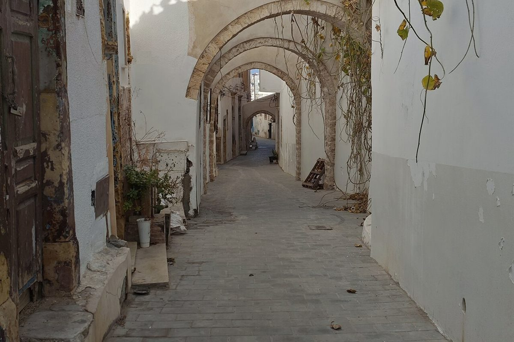
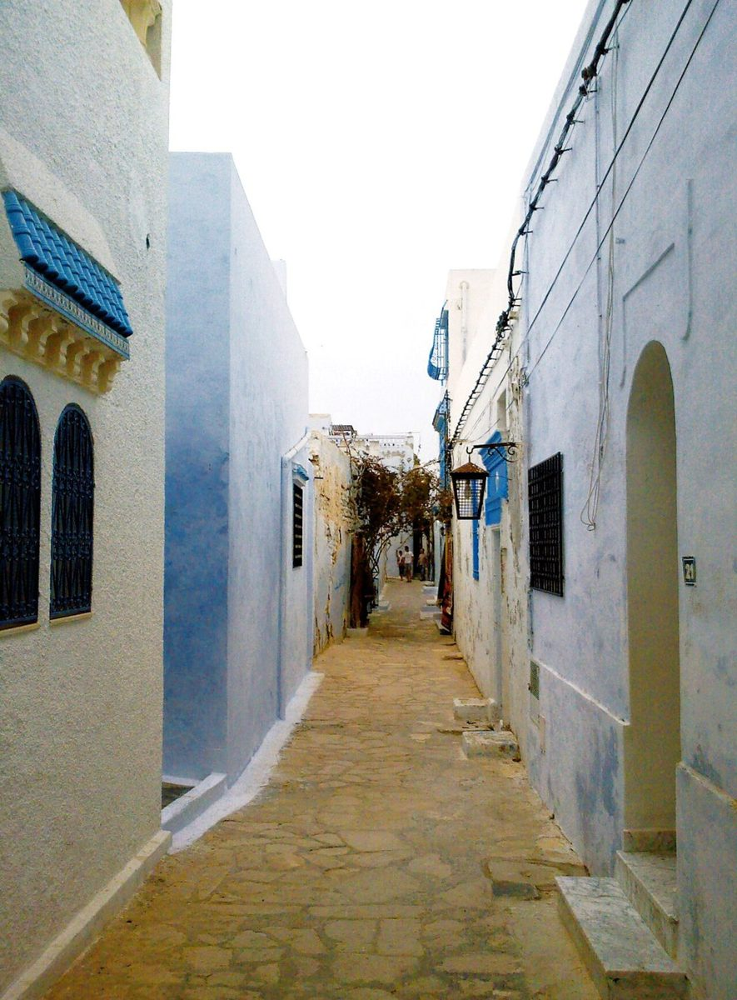
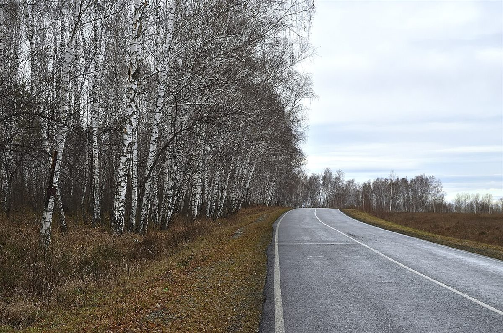

店のこと
店のこと
お店について確認できているのは、所在地・電話番号・Instagramのアカウントです。
このページの「想像してみる」部分は、制作側が想像して書いたものです。お店の実際の内容・考え・メニューとは関係がありません。
確認できていること
- 店名は「おいでおいで」、業種はカフェ
- 所在地は鹿児島県南さつま市金峰町尾下２３０１−１(〒899-3403)
- 電話番号は0993-78-3678
- Instagramのアカウントは @oide_oide_kagoshima
- 営業時間・定休日・メニュー・価格・ご予約・駐車場は準備中

想像してみる
名前の響きから
由来は分かりません。制作側は、遠くからでも「こっちだよ」と声をかけられているような響きだと感じました。そこで、このサイトは「遠くから近くへ」の並びで作っています。お店の実際の姿とは関係のない、制作側の連想です。


